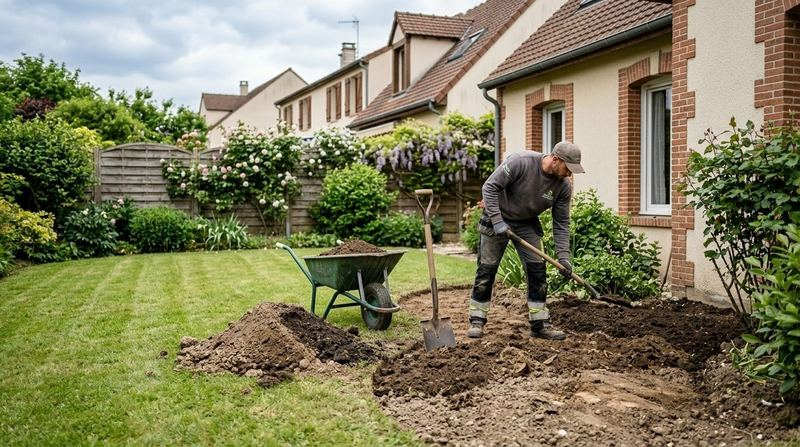
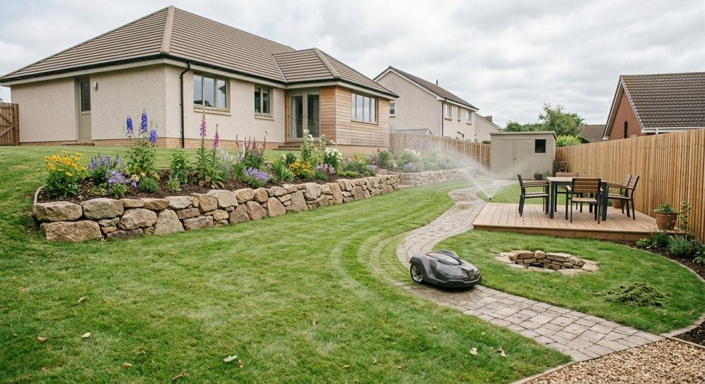
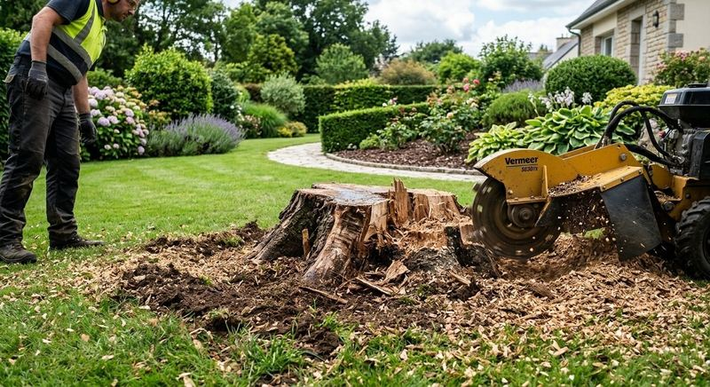
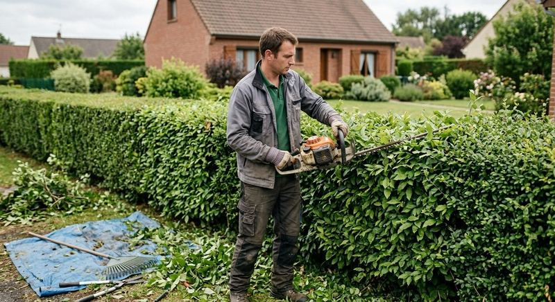
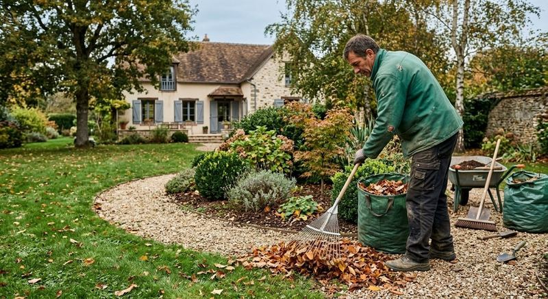
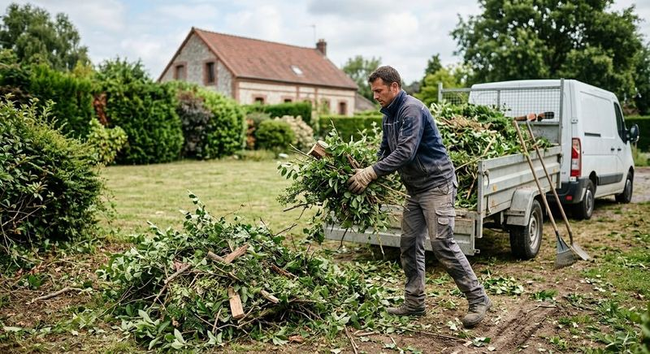
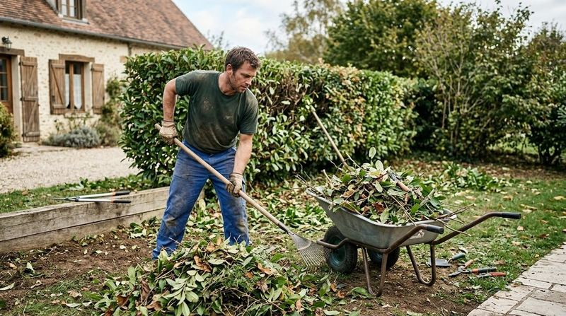

Réalisations
Jardins, pierre et arbres en images
Un aperçu des chantiers et des savoir-faire d'ALL GARDEN : aménagements, plantations, entretien et travaux sur les arbres.


Aménagements
Pierre, bois et allées
Des ouvrages qui structurent le jardin.


Jardins et plantations
Du terrain nu au massif planté
Préparation du sol, nivellement, plantation : chaque jardin commence par la terre.




Entretien et arbres
Le geste quotidien du jardinier
Taille, nettoyage, évacuation, et interventions sur les arbres.






À vous de jouer
Et si on parlait de votre jardin ?
Envoyez-nous quelques lignes sur ce que vous imaginez, nous vous rappelons.